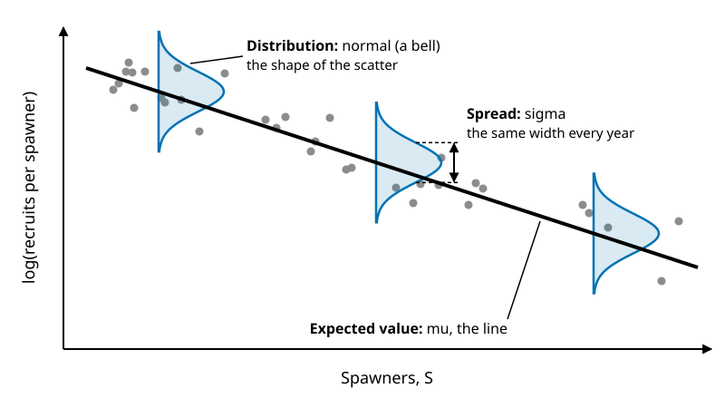
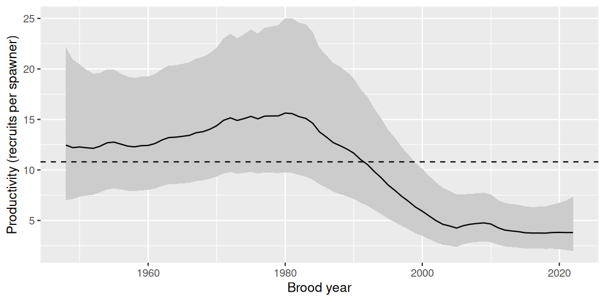
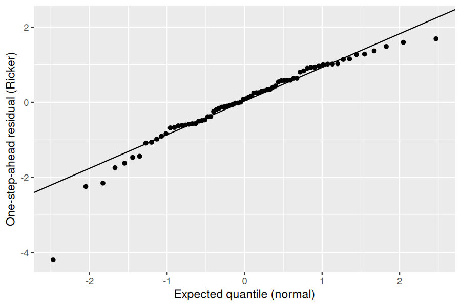
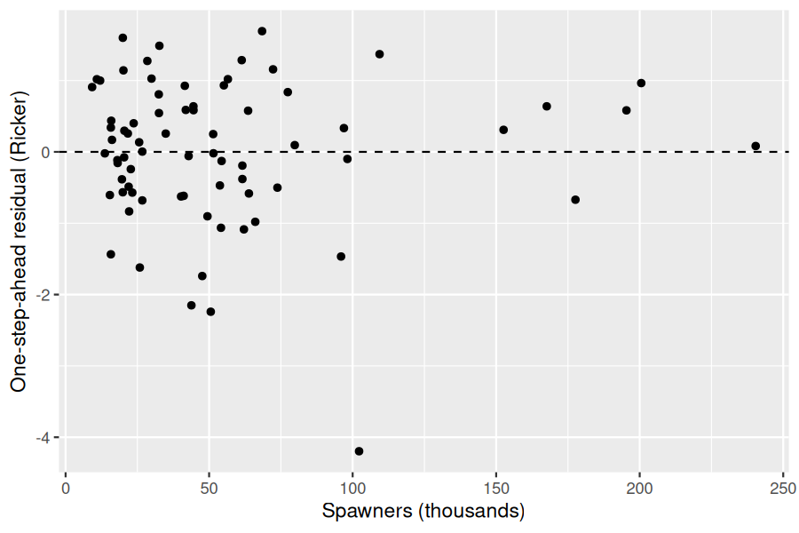
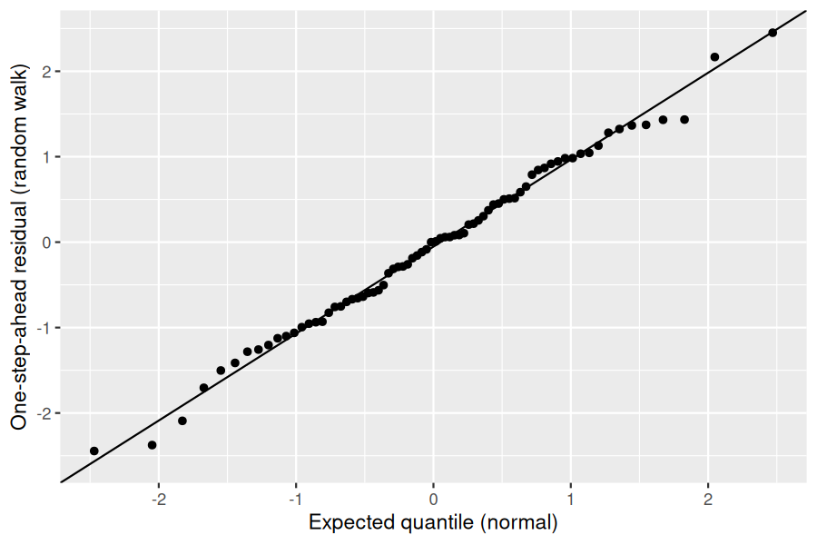
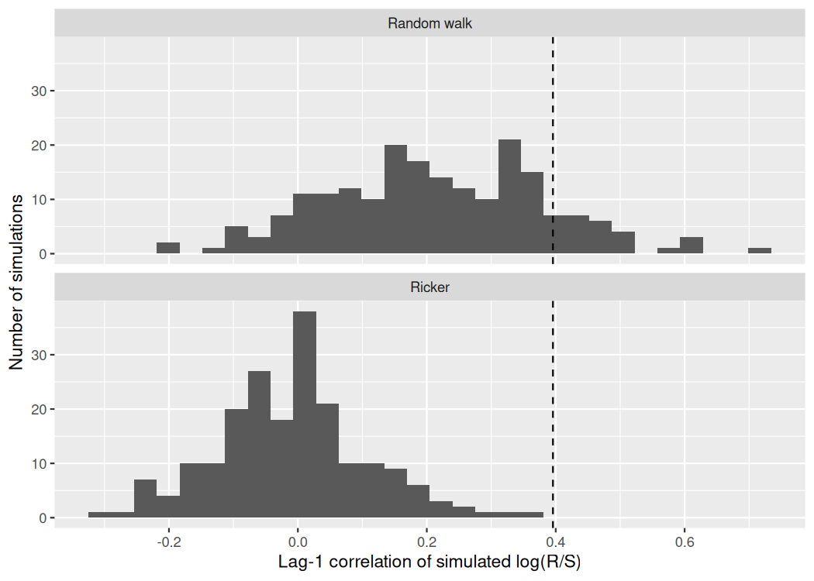
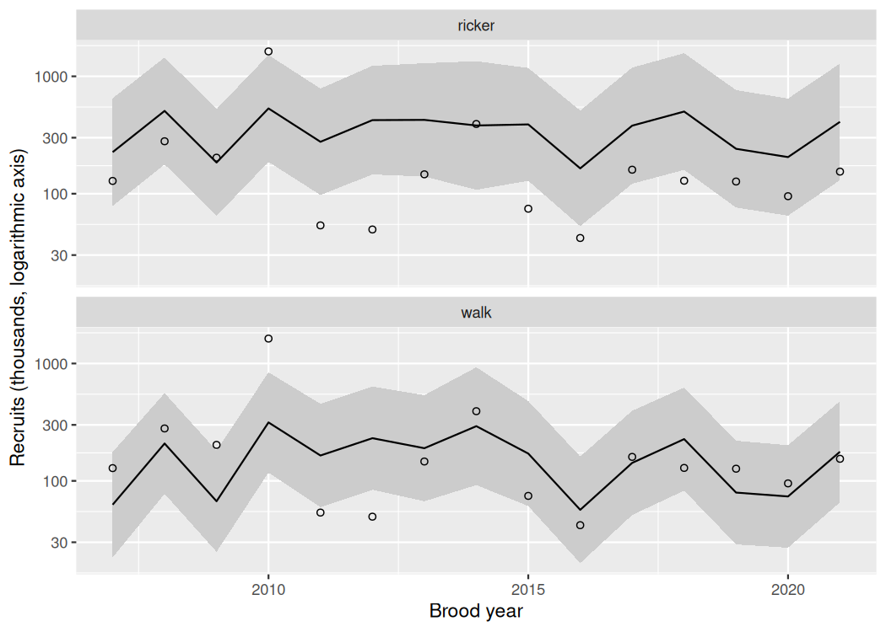

All Images
Introduction: Salmon, Spawners and Recruits
Figure 1
Image 1 of 1: ‘Diagram of the sockeye salmon life cycle as a loop. Adults spawn in a river in the brood year and then die; eggs hatch in the river gravel; young fish spend about a year in a lake; they migrate to the ocean; two to three years later the adults return to the river, and some are caught on the way. Recruits are all the adults produced by one brood year's spawners, whether caught or returning to spawn. The returning adults become the next spawners.’

Figure 2
Image 1 of 1: ‘Scatter plot of recruits against spawners for Stellako sockeye, both in thousands of fish, 74 brood years. Most years have 10 to 100 thousand spawners. Recruits rise quickly at low spawner numbers but do not keep rising, and vary widely, from about 12 to 1900 thousand. The eight years with more than 100 thousand spawners produced no more recruits than years with 40 to 70 thousand.’

Figure 3
Image 1 of 1: ‘Line and point plot of log recruits per spawner for Stellako against brood year, 1948 to 2021, with a dashed line at zero. Values are mostly between 1.5 and 3.5 until about 1990, then mostly between 0 and 2. One value, in 2005, is far below the rest at about minus 2.2.’

Figure 4
Image 1 of 1: ‘Nine numbered boxes in a row joined by arrows: 1 data, 2 model, 3 fit, 4 check the fit, 5 estimates, 6 check the model, 7 random effect, 8 compare, 9 forecast.’

Figure 5
Image 1 of 1: ‘Line and point plot of log recruits per spawner for Upper Pitt River against brood year, 1948 to 2021, with a dashed line at zero. Values move between about 0.4 and 3.5 until 2000 and are lower afterwards, between about minus 1.4 and 2.5, with nine years below zero.’

Quick Start: The Whole Workflow in Nine Steps
Figure 1
Image 1 of 1: ‘Nine numbered boxes in a row joined by arrows: 1 data, 2 model, 3 fit, 4 check the fit, 5 estimates, 6 check the model, 7 random effect, 8 compare, 9 forecast.’
Figure 2
Image 1 of 1: ‘Scatter plot of one-step-ahead residuals from the Ricker model against brood year for Stellako, 1948 to 2021, with a dashed line at zero. Most residuals are above zero before 1990, between about minus 0.6 and plus 1.7, and below zero after 2000, mostly between minus 2.2 and minus 0.7 after 2010. One residual, in 2005, is far below the others at about minus 4.2.’

Writing a Model as a Likelihood
Figure 1
Image 1 of 1: ‘A falling straight line of expected log recruits per spawner against spawners, with grey points, one per year, scattered around it. Three identical bell-shaped curves are drawn sideways on the line at low, middle and high spawner values. Labels point to the line (expected value, mu), the width of a bell (spread, sigma) and the bell shape (normal distribution).’

Figure 2
Image 1 of 1: ‘Scatter plot of Stellako recruits against spawners, both in thousands of fish, with three guessed curves. Most points have 10 to 100 thousand spawners and 10 to 1900 thousand recruits. Guess A (solid) rises to about 490 thousand recruits near 120 thousand spawners and then declines slowly, to about 340 thousand at 250 thousand spawners. Guess B (dotted) keeps rising, to about 1300 thousand at 250 thousand spawners. Guess C (dashed) peaks near 300 thousand at 50 thousand spawners and then falls to about 30 thousand.’
![Scatter plot of Stellako recruits against spawners, both in thousands of fish, with three guessed curves. Most points have 10 to 100 thousand spawners and 10 to 1900 thousand recruits. Guess A (solid) rises to about 490 thousand recruits near 120 thousand spawners and then declines slowly, to about 340 thousand at 250 thousand spawners. Guess B (dotted) keeps rising, to about 1300 thousand at 250 thousand spawners. Guess C (dashed) peaks near 300 thousand at 50 thousand spawners and then falls to about 30 thousand.](../fig/03-likelihoods-rendered-plot-guesses-1.png)
Fitting a Model and Checking the Fit
Figure 1
Image 1 of 1: ‘Three sketches of a valley with a hiker. Left: a round bowl with the hiker at the single lowest point, labelled all four checks TRUE. Middle: the hiker stopped on a slope above the bottom, labelled flat FALSE. Right: a valley with a long flat floor where the hiker could stand anywhere, labelled curved or finite_se FALSE: two parameters do one job.’

Estimates, Intervals and Derived Quantities
Figure 1
Image 1 of 1: ‘Scatter plot of Stellako recruits (12 to about 1900 thousand) against spawners (9 to 240 thousand), drawn as open circles, with the fitted Ricker curve and a shaded 95% confidence band. The curve rises to about 490 thousand recruits near 120 thousand spawners, then falls slowly to about 350 thousand at 250 thousand spawners. The band is narrow below 60 thousand spawners and widens to about 150 to 830 thousand at 250 thousand. Most points lie outside the band.’

Random Effects: Productivity That Changes over Time
Figure 1
Image 1 of 1: ‘Line plot of estimated Stellako productivity, in recruits per spawner when spawners are few, against brood year, 1948 to 2022, with a shaded 95% band and a dashed horizontal line at 10.8, the constant Ricker estimate. Productivity is about 12 to 16 from 1948 to the mid-1980s, falls steeply from about 1985 to 2005, and stays near 4 from 2005 to 2022. The band is widest around 1980, about 10 to 25.’

Figure 2
Image 1 of 1: ‘Line plot of estimated Upper Pitt River productivity, in recruits per spawner, against brood year, 1948 to 2022, with a shaded 95% band. Productivity is about 8 to 10 until 1960, peaks near 19 in the mid-1960s and early 1970s, falls to about 5 around 1980, rises to about 13 in the late 1990s, and is about 2 to 4 after 2012. The band reaches up to about 40 at the peaks.’

Checking a Model with Residuals
Figure 1
Image 1 of 1: ‘Normal quantile-quantile plot of the Stellako Ricker one-step-ahead residuals. The points follow the straight line closely in the middle, for expected quantiles between about minus 1.3 and plus 1.3. The lowest point, at about minus 4.2 (brood year 2005), lies far below the line; the next few lowest points and the few highest points lie a little below it.’

Figure 2
Image 1 of 1: ‘Two panels of one-step-ahead residuals against brood year for Stellako, 1948 to 2021, each with a dashed line at zero. Top, random walk: residuals scatter around zero with no long runs. Bottom, Ricker: residuals are mostly above zero before 1990 and mostly below zero after 2000. Both panels have one point near minus 4 in 2005.’

Figure 3
Image 1 of 1: ‘Scatter plot of Stellako Ricker one-step-ahead residuals against spawners in thousands, with a dashed line at zero. Most points are below 80 thousand spawners and scatter around zero, between about minus 2.2 and plus 1.7, with no clear curve. Six of the seven points above 105 thousand spawners lie above zero. The lowest point, near minus 4.2, is at about 100 thousand spawners.’

Figure 4
Image 1 of 1: ‘Normal quantile-quantile plot of the Upper Pitt River Ricker one-step-ahead residuals. The middle points follow the line, but both ends bend below it: the five lowest points, between about minus 2.7 and minus 2.1, lie well below the line, and the highest points, between about 1.4 and 1.8, also lie below it.’

Figure 5
Image 1 of 1: ‘Normal quantile-quantile plot of the Upper Pitt River random-walk one-step-ahead residuals. The points follow the straight line closely from the lowest, near minus 2.4, to the highest, near plus 2.5, with no bend at either end; a few points near plus 1.4 lie slightly below it.’

Figure 6
Image 1 of 1: ‘Two panels of Upper Pitt River one-step-ahead residuals against brood year, 1948 to 2021, each with a dashed line at zero. Top, random walk: residuals cross zero often, with only short runs above or below it. Bottom, Ricker: the residuals run in long waves, mostly above zero in the 1960s and early 1970s, below zero around 1980, above zero in the 1990s, and mostly below zero after 2010, with the lowest values near minus 2.7 in 2014 and 2015.’

Checking a Model with Simulation
Figure 1
Image 1 of 1: ‘Three line plots, stacked, of log recruits per spawner against brood year, 1948 to 2021: the real Stellako data at the top, and below it one data set simulated from each model, labelled Simulated from the random walk and Simulated from the Ricker. The real series stays near 2 to 3 until about 1990, falls to about 1 after 2000 and drops to minus 2.2 in 2005. The Ricker simulation moves up and down around 1.5 to 2 throughout, with no long runs. The random-walk simulation wanders for years at a time: about 2.5 until 1990, lower in the 1990s, then climbing to between 3.5 and 4.5 in 2015 to 2018, a different path from the real one.’
![Three line plots, stacked, of log recruits per spawner against brood year, 1948 to 2021: the real Stellako data at the top, and below it one data set simulated from each model, labelled Simulated from the random walk and Simulated from the Ricker. The real series stays near 2 to 3 until about 1990, falls to about 1 after 2000 and drops to minus 2.2 in 2005. The Ricker simulation moves up and down around 1.5 to 2 throughout, with no long runs. The random-walk simulation wanders for years at a time: about 2.5 until 1990, lower in the 1990s, then climbing to between 3.5 and 4.5 in 2015 to 2018, a different path from the real one.](../fig/08-simulation-rendered-plot-sim-series-1.png)
Figure 2
Image 1 of 1: ‘Two histograms of the lag-1 correlation of log recruits per spawner in 200 data sets simulated from each model, with a dashed line at the observed value of 0.40. Random walk (top): values spread from about minus 0.2 to 0.7 and centre near 0.2; about one in eight lie at or beyond the dashed line. Ricker (bottom): values spread from about minus 0.3 to 0.35, centre near 0, and none reach the dashed line.’

Figure 3
Image 1 of 1: ‘Four histograms, on logarithmic axes, of estimates from 50 data sets simulated from the Stellako random-walk model, one panel per parameter, each with a dashed line at the true value. Alpha (true 12.5) and sigma (true 0.70) centre on their true values, although the alpha estimates range from about 5 to 26. S_max (true 200 thousand) has most estimates between about 110 and 440 thousand, with a long right tail of a few estimates near 600, 1100 and 7700. The sd_walk estimates form two groups: 39 between about 0.04 and 0.21, around the true value of 0.13, and 11 at about 0.000002, which is zero in practice.’
![Four histograms, on logarithmic axes, of estimates from 50 data sets simulated from the Stellako random-walk model, one panel per parameter, each with a dashed line at the true value. Alpha (true 12.5) and sigma (true 0.70) centre on their true values, although the alpha estimates range from about 5 to 26. S_max (true 200 thousand) has most estimates between about 110 and 440 thousand, with a long right tail of a few estimates near 600, 1100 and 7700. The sd_walk estimates form two groups: 39 between about 0.04 and 0.21, around the true value of 0.13, and 11 at about 0.000002, which is zero in practice.](../fig/08-simulation-rendered-plot-self-test-1.png)
Comparing Models with AIC
Figure 1
Image 1 of 1: ‘Scatter plot of Stellako recruits against spawners, both in thousands, with two fitted curves. Most points lie below 110 thousand spawners, with recruits from about 12 to 1900 thousand; only six points lie above 150 thousand spawners. The Ricker curve (dashed) peaks at about 490 thousand recruits near 120 thousand spawners and falls to about 350 thousand at 250 thousand spawners. The Beverton-Holt curve (solid) keeps rising, more and more slowly, to about 495 thousand at 250 thousand spawners. The two curves are close below 150 thousand spawners, cross near 165 thousand, and separate above it.’
![Scatter plot of Stellako recruits against spawners, both in thousands, with two fitted curves. Most points lie below 110 thousand spawners, with recruits from about 12 to 1900 thousand; only six points lie above 150 thousand spawners. The Ricker curve (dashed) peaks at about 490 thousand recruits near 120 thousand spawners and falls to about 350 thousand at 250 thousand spawners. The Beverton-Holt curve (solid) keeps rising, more and more slowly, to about 495 thousand at 250 thousand spawners. The two curves are close below 150 thousand spawners, cross near 165 thousand, and separate above it.](../fig/09-model-selection-rendered-plot-two-curves-1.png)
Many Stocks: Random Effects for Groups
Figure 1
Image 1 of 1: ‘Arrow plot of productivity, in recruits per spawner, for 19 sockeye stocks sorted by their separate estimate. Each arrow starts at the stock's separate estimate, between about 6.4 and 15.7, and ends at its pooled estimate, between about 8.6 and 10.5, pointing toward a dashed line at the overall average of 9.5. The longest arrows belong to Weaver Creek, Portage and Gates at the top and to Scotch Creek and Late Shuswap at the bottom.’

Figure 2
Image 1 of 1: ‘Point and interval plot of the shared year effect on log recruits per spawner against brood year, 1948 to 2022, with a dashed line at zero. Values are mostly between 0 and plus 1 until about 1990, mostly below zero from 1990 to 2018 and slightly above zero in 2019 to 2021, with very low years in 2003, 2005, 2013 and 2015 (about minus 1.7 to minus 2.6). The last year, 2022, has the widest interval.’

Forecasting and Testing Forecasts
Figure 1
Image 1 of 1: ‘Timeline of brood years from 1948 to 2021. The first row shows a shaded training block from 1948 to 2006 followed by one forecast year, 2007. The next row trains to 2007 and forecasts 2008, and so on, until the last row trains to 2020 and forecasts 2021. Later years in each row are not used.’

Figure 2
Image 1 of 1: ‘Two panels, Ricker (top) and random walk (bottom), of forecast recruits for brood years 2007 to 2021, in thousands on a logarithmic axis, shown as a line with a shaded 80% interval, with the observed recruits as open circles. The Ricker forecasts sit above most observations. The random-walk forecasts run through the middle of them. In both panels several observations fall outside the interval, including 2010 (about 1600 thousand) and 2011 and 2012 (about 50 thousand).’
